<div class="card">
    <div class="card-container">
        <header>
        <div class="block1 text-center p-4 mb-3 ">
            <app-header></app-header>
        </div>
        </header>
        <section>
        <div class="block2 text-center p-4 mb-3">
            <p class="presents">Presents</p>
            
        </div>
        <div class="block3 text-center p-4 mb-3">
            <p class="reg">27th & 28th</p>
            <p class="reg1">January</p>
            <p class="now">Register Now</p>
        </div>
        </section>
        <section class="about">
            <div class="college">
                <div class="cTitle">
                    <h1>About Chetana</h1>
                </div>
                <div class="cDesc">
                    <p>The meaning of the word “Chetana” is consciousness. Consciousness is the essence of all creation. It is all-pervasive and infinite. It is the essence that unifies all beings and things. The cultural advancement of the human race itself can be attributed to the awareness of this consciousness. This consciousness requires a blend of emotional awareness and wisdom, which are the primary goals of education. Hence this name was suggested by Late Smt. Kusumtai Chaudhari while forming this profound education movement. Chetana, a service oriented educational trust was established on 09th September, 1969 by Respected Balasaheb Madhukarrao Chaudhari (former Education and Finance Minister, Government of Maharashtra and Ex-Speaker, Maharashtra Legislative Assembly)</p>
                </div>
            </div>
            <div class="event">
                <div class="eTitle">
                    <h1>About Event</h1>
                </div>
                <div class="eDesc">
                    <p>Iskra.Tech is an inter-collegiate I.T. event which was organized by the students of Bachelor of Science in Information Technology (B.Sc-I.T.) on December 15th, 2018. Iskra.Tech focuses on various tech related competitions. These events are extremely innovative and offers something different from the various college events held in Mumbai.</p>
                </div>
            </div>
            <div class="theme">
                <div class="themeBy">Theme</div>
                <div class="tName"></div>
            </div>
        </section>
        <div class="block4 text-center p-4 mb-3">
            <app-countdown></app-countdown>
        </div>
        <div class="block5 text-center p-4 mb-3">
            <app-card></app-card>
        </div>
        <div class="block6 text-center p-4 mb-3">3</div>
        <footer>
            <app-footer></app-footer>
        </footer>
    </div>
</div>